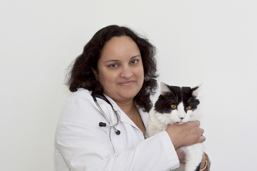

TENDER TOUCH
SMALL ANIMAL HOSPITAL

Sandhya Sadhanala, DVM, CVA, Veterinarian, Owner
Dr. Sandhya Sadhanala, originally from India, graduated in 1999 from the College of Veterinary Science, Tirupathi. After five years of practice in India, she moved to the US in 2005, passing her ECFVG Boards to pursue Small Animal Veterinary Medicine.
Awarded the "Super Vet" in 2009, she's dedicated to providing top-notch care, blending traditional and modern approaches along with her certification in Veterinary Acupuncture. Her interests span client education, ultrasound,
and internal medicine. Outside work, she enjoys traveling, hiking, tennis, and family time with her husband, son, and two cats, Ronnie & Kitkat.